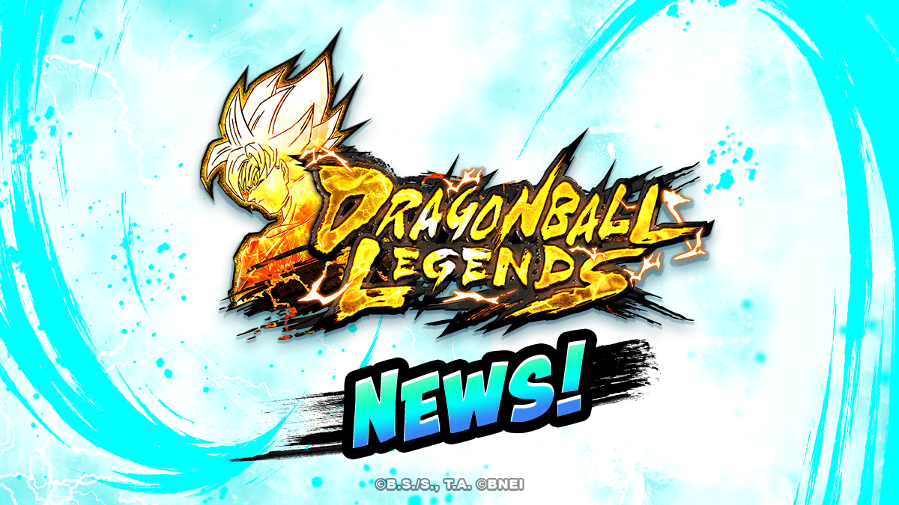
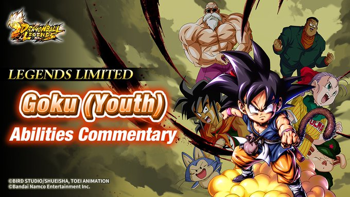
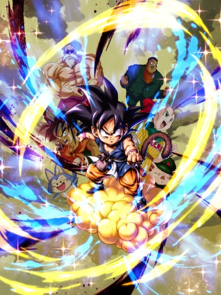
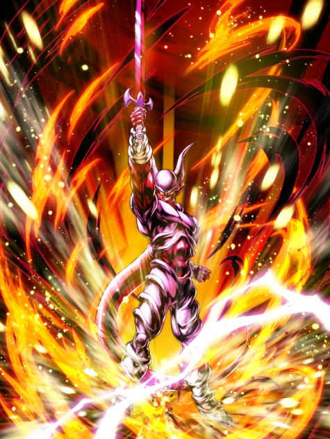
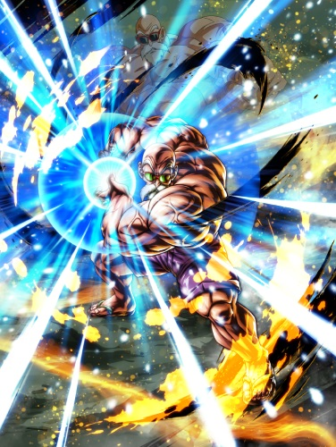

Las nuevas novedades de dragon ball legends
¡El juego de acción anime definitivo ya está aquí! ¡DRAGON BALL LEGENDS pone en tus manos el poder de tus héroes favoritos de DRAGON BALL! Las épicas imágenes y animaciones en 3D dan vida a tu colección de héroes: más de 400 personajes que podrás conseguir y entrenar para formar tu equipo definitivo. ¡Goku, Vegeta, Trunks, Piccolo, Freezer, Broly, Majin Buu y muchos otros héroes y villanos te esperan! Descubre una nueva historia original basada en el nuevo personaje diseñado por Akira Toriyama, el misterioso saiyajin Shallot. ¡Únete a Shallot y a tus personajes favoritos de DRAGON BALL para salvar el mundo!
¡Invoca personajes de las populares series de anime DBZ, DBGT y DBS!
JUEGO DE ACCIÓN ÉPICA x
★ Controla intuitivamente a tus luchadores favoritos de DB en 3D.
★ Esquiva a tu oponente en tiempo real, contraataca, utiliza tus cartas de destrezas y realiza increíbles
combos.
★ Llena las ranuras de DRAGON BALL durante la lucha para desencadenar en equipo la poderosa Cadena Devastadora.
ENTRA EN EL MUNDO DE DRAGON BALL
★ Acción clásica del anime recreada con personajes y escenarios en 3D de alta calidad.
★ Recreaciones modernas de los movimientos especiales más emblemáticos con suaves animaciones de personaje.
★ Juega en las sagas clásicas de DRAGON BALL.
En la nuevas actualizacion del juego (V4.31.0), se agregaron varrias cosas nuevas, que son las
siguentes: muchos eventos, nuevos personajes y nuevos modos.
A continuacion sabras cuales son todas las nuevas cosas en profundizacion.
Novedades
 ¡Se agregaron varios nuevos personajes!
¡ Goku niño LEGENDS LIMITED tiene un medidor único que infunde ciertos efectos cada vez que
reúnes esferas del
dragón!
¡Llega Súper Janemba de rareza ULTRA con un medidor único de tipo Contraataque!
¡Cuenta con muchas formas para debilitar el enemigo y recuperar salud, así como habilidades de defensa usando
contraataques!
Súper Janemba es un personaje todopoderoso que sobresale tanto en el ataque como en la defensa gracias a su
habilidad de infligir gran daño y Hemorragias al atacar con sus destrezas de TE y definitivas!
¡Aquí presentaremos algunas de sus características!
★Medidor único de tipo Contraataque★
¡Es del tipo que va aumentando conforme pasa el tiempo!
¡Cuando el medidor único está al máximo, lo gastará todo para ejecutar un contraataque contra destrezas físicas,
y algunas destrezas de TE y propias de embestida u otro tipo del enemigo!
¡Después de ejecutar el contraataque, el medidor de evanescencia se recupera al 100% y aumenta la velocidad de
robo de cartas, lo que hace que este contraataque sea fácil de continuar!
★Habilidades de ataque★
Al comienzo de la lucha, ¡aumenta la velocidad de robo de cartas y anula por un tiempo el efecto de reducción de
ki que infunde el enemigo!
Al entrar en la lucha, ¡recupera ki y roba una carta de destreza al azar si tienes tres cartas o menos!
Además, ¡anula el Cambio Protector singular del enemigo por un tiempo al usar destrezas físicas y de energía!
¡Podrás atacar con todo sin preocuparte por la reducción de ki o el Cambio Protector singular del enemigo!
Por otro lado, ¡tiene 100% de probabilidad de infligir Ultra Hemorragia al acertar con sus destrezas de TE o
definitivas!
eventos
Ahora se prodra jugar un nuevos modo online donde competiras en un torneo con varios luchadores muy fuertes que
estan alrededor del mundo.
participa para descubrir si eres uno de los mas poderodo del mundo con combates freneticos y unicos que jasmas
fueron visto. ¿seras el ganador?
¡Por cada pelea que hagas obtendras varias recompensas!
-Nuevos token, donde con ellos en la tienda< lo podras cangear en la tienda por increibles objetos (cristales,
dinero, energia, fragmentos, etc)
-Tickes de banner. Descubre que personajes invocasd para tu equipo.
-Esperiencia para tu rango de clasificacion
tambien podras obtener un nuevo personaje jugando el modo coperativo, donde junto a tu amigo podran luchar y
sacarse el nuevo personaje esclusivo por el evento de Tapion, incluso por cada batalla
obtendras monedas donde las puedes usarla en canjear recompensas unicas. Juega junto a tu compañero de batalla y
derroten este
nuevo enemigo que amenaza a la tierra para poder conseguir todas estas recomprensas exclusivas
Personajes
★Goku (youth)★
★Tapion★

★Janemba★
★Maestro Roshi★
Estos son algunos de los nuevos personajes agregados en esta nueva actualizacion, para descubrir todo lo nuevo, deberan entrar el juego y ve cual es tu nuevo luchador favorito en esta actualizacion